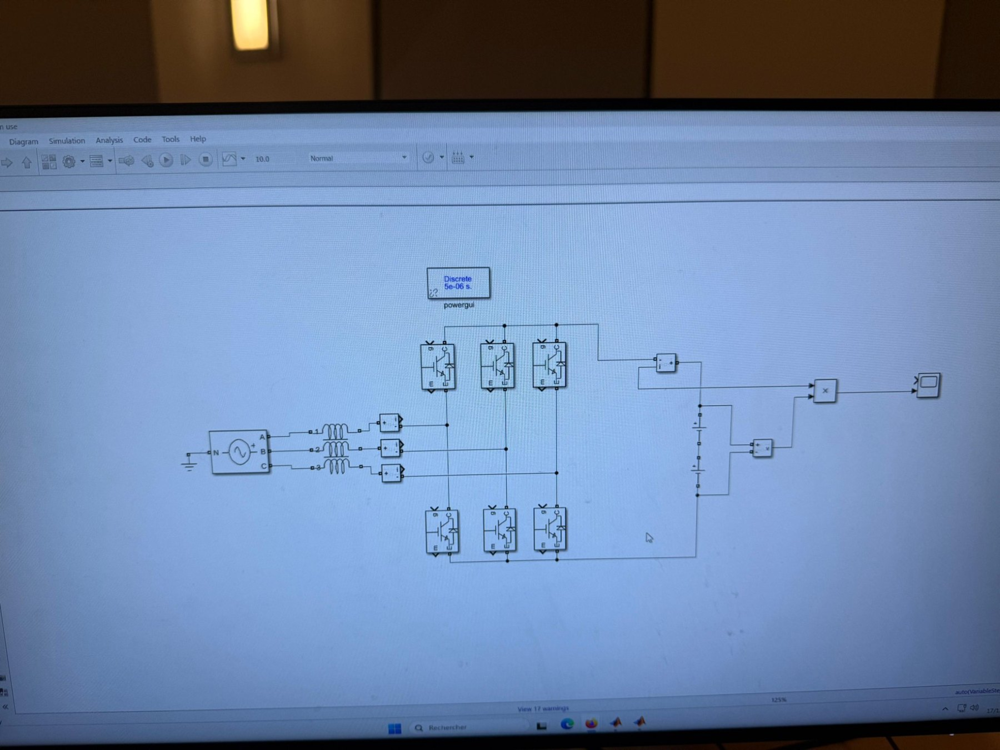
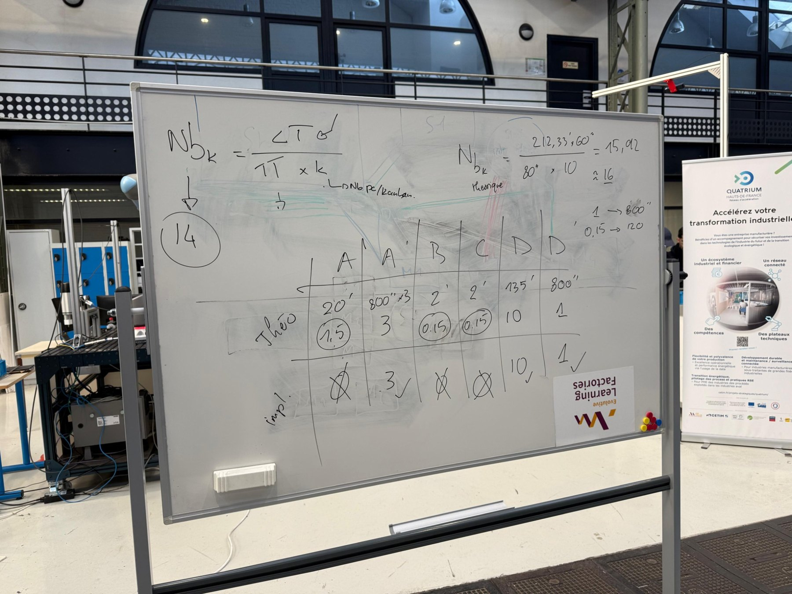

ÉLECTRONIQUE DE PUISSANCE · PROJET EN ÉQUIPE · 2026
Commande de convertisseurs modulaires multiniveaux
Étude des stratégies de commande de convertisseurs MMC, avec comparaison de méthodes classiques, hybrides et fondées sur l’optimisation.
MATLABSystèmes de commandeOptimizationÉlectronique de puissance

PRÉSENTATION DU PROJET
Modélisation et comparaison des stratégies de commande
Simulation d’une architecture MMC et comparaison de la modulation par niveaux les plus proches, des algorithmes d’équilibrage et de stratégies d’optimisation par recuit simulé et algorithmes génétiques.
Analyse du nombre de commutations, des pertes du convertisseur et de la qualité de la tension afin d’identifier les compromis entre performances des lois de commande.
